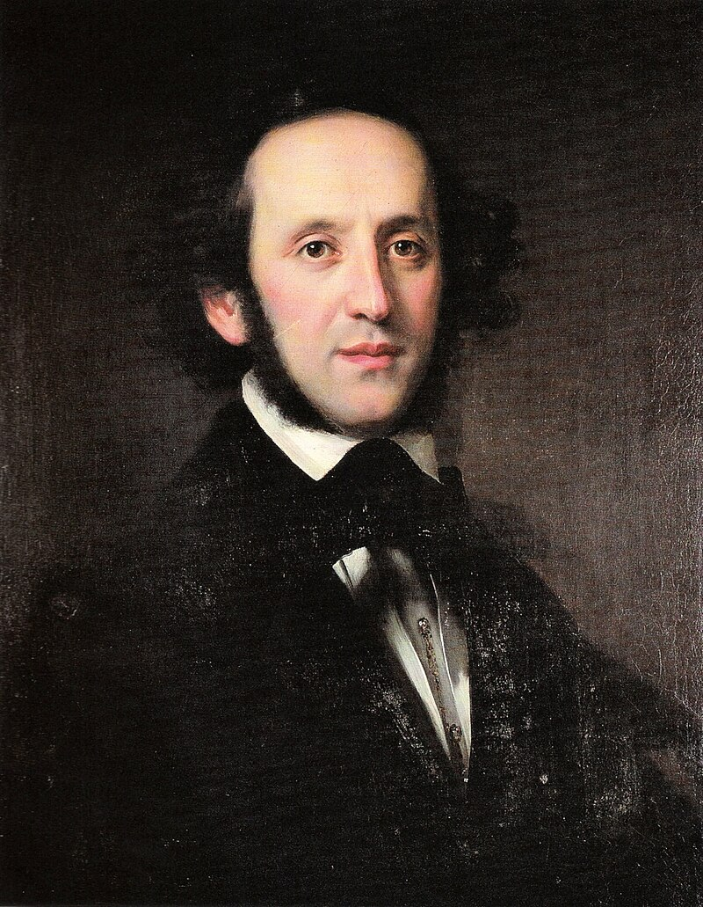
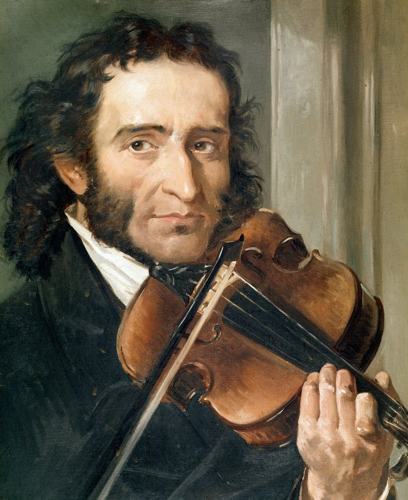

Pyotr Illyich Tchaikovsky
"Pyotr Ilyich Tchaikovsky (7 May 1840 – 6 November 1893) was a Russian composer during the Romantic period. He was the first Russian composer whose music made a lasting impression internationally. Tchaikovsky wrote some of the most popular concert and theatrical music in the classical repertoire, including the ballets Swan Lake and The Nutcracker, the 1812 Overture, his First Piano Concerto, Violin Concerto, the Romeo and Juliet Overture-Fantasy, several symphonies, and the opera Eugene Onegin." - Wikipedia

Felix Mendelssohn
"Jakob Ludwig Felix Mendelssohn Bartholdy(3 February 1809 – 4 November 1847), widely known as Felix Mendelssohn, was a German composer, pianist, organist and conductor of the early Romantic period. Mendelssohn's compositions include symphonies, concertos, piano music, organ music and chamber music. His best-known works include the overture and incidental music for A Midsummer Night's Dream (which includes his "Wedding March"), the Italian and Scottish Symphonies, the oratorios St. Paul and Elijah, the Hebrides Overture, the mature Violin Concerto, the String Octet, and the melody used in the Christmas carol 'Hark! The Herald Angels Sing'" - Wikipedia

Bernhard Henrik Crusell
"Bernhard Henrik Crusell (15 October 1775 – 28 July 1838) was a Swedish-Finnish clarinetist, composer and translator, 'the most significant and internationally best-known Finnish-born classical composer and indeed, – the outstanding Finnish composer before Sibelius'." - Wikipedia

Niccolò Paganini
"Niccolò (or Nicolò) Paganini(27 October 1782 – 27 May 1840) was an Italian violinist and composer. He was the most celebrated violin virtuoso of his time, and left his mark as one of the pillars of modern violin technique. His 24 Caprices for Solo Violin Op. 1 are among the best known of his compositions and have served as an inspiration for many prominent composers." - Wikipedia